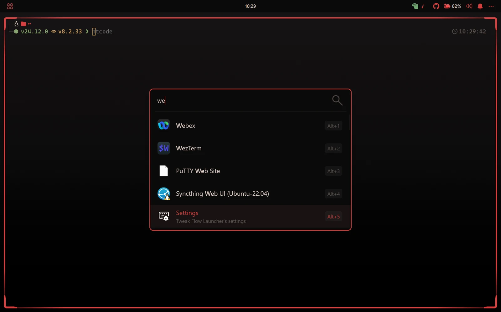
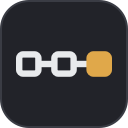

Loading…
One palette.
Every tool.
One theme for your terminal, editor, prompt, and the rest of your setup. You own the map; one command paints it everywhere.
$ hueman set catppuccin-mocha
INFO: Generated: ~/.config/kitty/theme.conf
INFO: Generated: ~/.config/tmux/theme.conf
INFO: Active theme: catppuccin-mochaOne command. The whole desk repaints.
hueman set crimson-vivid repaints kitty, polybar, rofi, tuicr and yazi.

Four apps, four themes
Kitty on mocha. Neovim on gruvbox. Starship on something else. Every change is a manual edit in a different config, so it all works but never quite matches.
One palette, one command
$ hueman set catppuccin-mocha
INFO: Generated: ~/.config/kitty/theme.conf
INFO: Generated: ~/.config/tmux/theme.conf
INFO: Active theme: catppuccin-mochaHow it works
Output paths live in your hueman.config.yaml, so there
are no guessed routes and no dotfiles manager to adopt. A target
either overwrites a generated file or patches a block inside a
config you still edit by hand. To add a tool, write a Jinja
template and a target; the engine stays untouched.
Paths are yours
Paths, targets, and templates are yours. You decide which file each tool touches, what gets fully overwritten, and what gets patched in place. hueman writes to the paths you list in your config. It never guesses where a file lives.
Switch palettes and one command regenerates the whole map. Another app is another target and, if you need it, another template, with no change to the engine.
Works with these, or add your own
Starter templates for common tools. Anything else goes in your
own template_dirs.
 kitty
kitty tmux
tmux nvim
nvim starship
starship wezterm
wezterm yazi
yazi rofi
rofi polybar
polybar qutebrowser
qutebrowser fzf
fzf atuin
atuin oh-my-posh
oh-my-posh dunst
dunst bspwm
bspwm termux
termux k9s
k9s bottom
bottom lazydocker
lazydocker herdr
herdr windhawk
windhawk- posting
- tuicr

sshub custom
custom
25 generic palettes shipped (catppuccin, gruvbox, nord, kanagawa…).
Three steps
-
pipx install hueman-cli -
hueman initwrites a sample config. Point itsoutputsat your paths. -
hueman set catppuccin-mocha